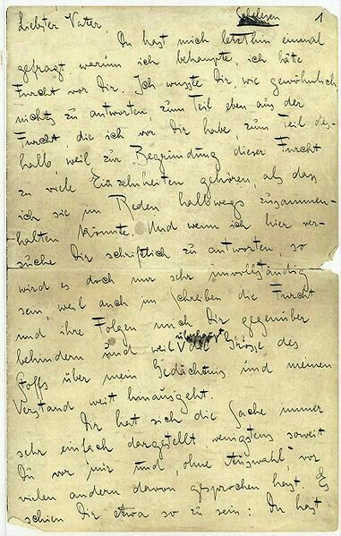
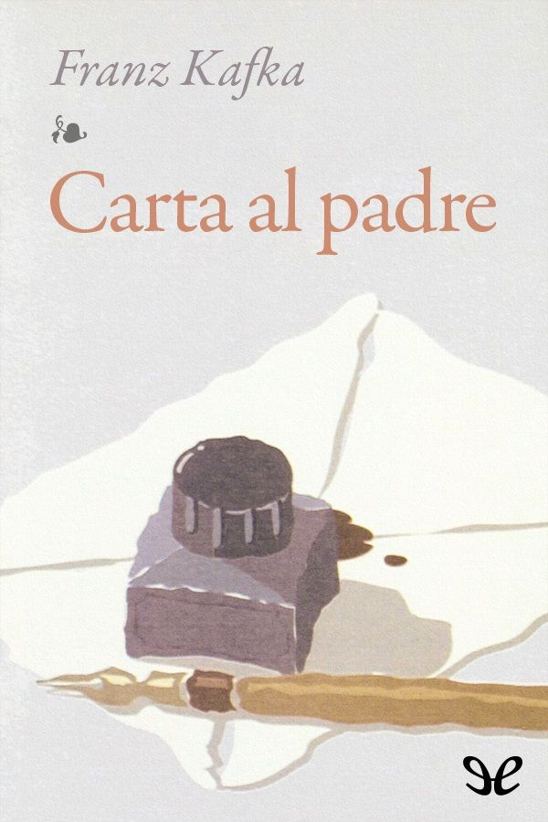

"No sé cómo se siente, cuando dice una palabra, que está gritando a mí"
Fragmento de la cartaSINOPSIS
*Carta al padre* es un texto autobiográfico en el que Franz Kafka dirige una larga y profunda carta a su padre, Hermann Kafka. En ella expone sus sentimientos de miedo, culpa y humillación, así como el efecto que la autoridad paterna tuvo en su vida y en su desarrollo personal. La carta combina recuerdos concretos con reflexiones psicológicas y literarias, y, aunque nunca fue enviada, constituye una pieza clave para entender la vida íntima del autor.

DESCARGAR PDF